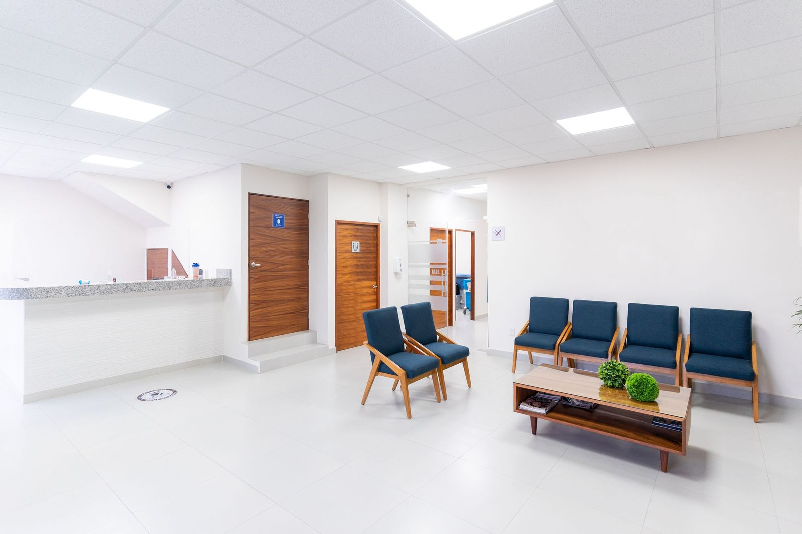
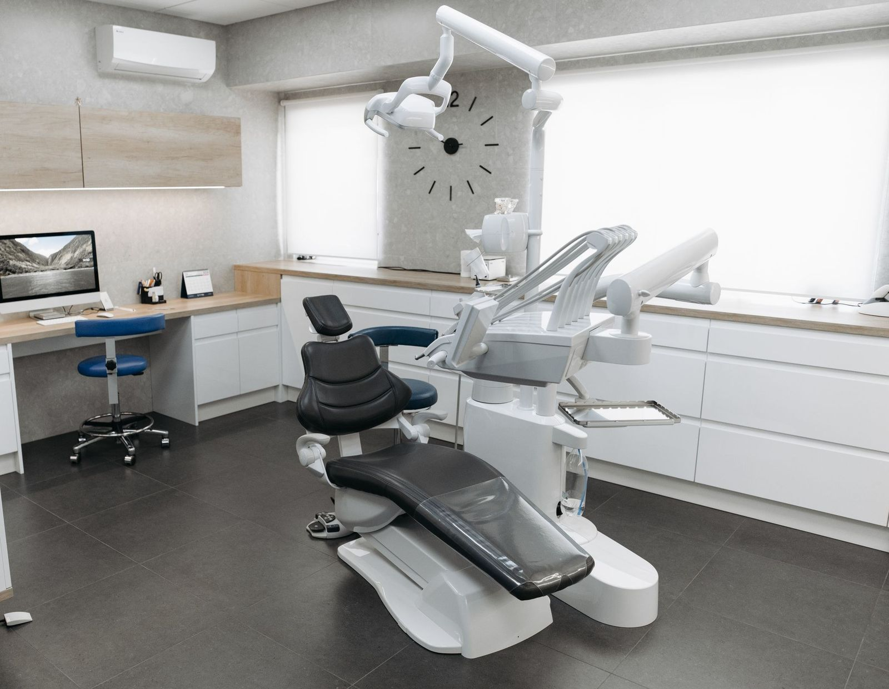
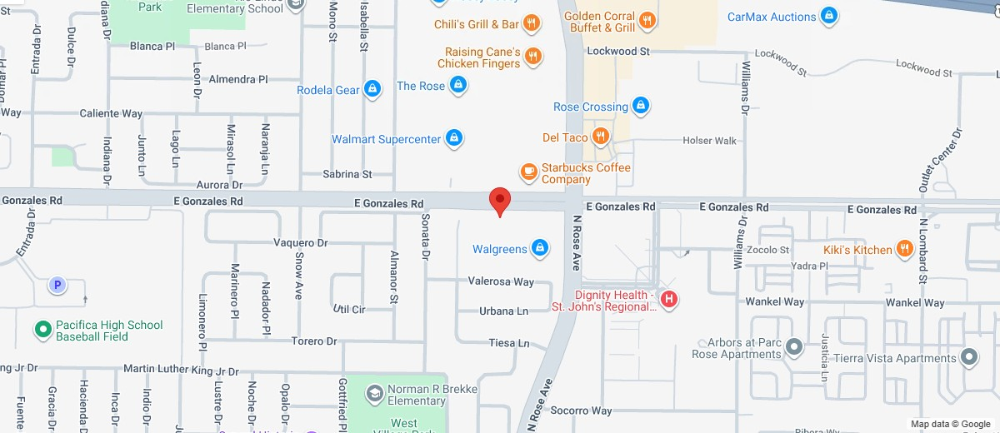

General Dentistry
in Oxnard, CA
Individual results vary. This page is for informational purposes and does not constitute dental advice.
General dentistry is the routine, ongoing care of your teeth and gums, including exams, cleanings and patient education. We provide it at our Oxnard office and explain what we find in plain language.

General dentistry at a glance
Where
1690 E. Gonzales Road, Oxnard, CA 93036.
When
Mon to Fri 9 am to 5 pm. Saturday by appointment. Closed Sunday.
How to Book
Call (805) 366-6000 or send a request online.
What Is
General Dentistry?
General dentistry is the routine care that looks after the teeth and gums of Oxnard patients over time. It starts with regular exams and cleanings, and it includes time to ask questions about your oral health.
MedlinePlus describes a dental exam as part of a checkup of your teeth and gums. Cleveland Clinic adds that dentists can treat a wide range of oral health issues, including cavities, gingivitis and gum disease.
At Omni Dental Specialty in Oxnard, your dentist reviews your dental history and explains the findings. If something needs further attention, your dentist discusses the options with you, and we answer your questions along the way. We welcome patients from Oxnard, El Rio and College Park. You can read about our Oxnard dental office or contact us to ask about a visit.
- Routine cleanings
- Dental exams
- Patient education
- Review of your concerns

Who General Dentistry in Oxnard Is For
People come to general dentistry for many reasons. These are some common ones, and your dentist can talk through what applies to you.
If you are looking for a dental office in Oxnard, a first visit lets us review your dental history and answer your questions. Cleveland Clinic describes a first visit as talking about your oral health goals, going over your medical history and examining your teeth and gums.
Regular visits let your dentist see how your teeth and gums change over time. MouthHealthy notes that checkups are important even if you do not have any symptoms.
If you are unsure whether something needs attention, call the office and tell us what you notice. We talk through possible next steps.
Tell your dentist about any health conditions you have. MedlinePlus says you may need more frequent dental exams if you have a health condition such as diabetes or heart disease.
MouthHealthy says pregnancy can make some dental problems worse, so regular checkups still matter. MedlinePlus adds that you should tell your dentist if you are pregnant or think you may be pregnant.
If it has been a while since your last visit, you are welcome to call and ask what a first step could look like. We can talk through what to bring and what to expect.
What a Routine Visit Includes
The order can vary, and your dentist adjusts each visit to your needs. We walk you through each stage so you know what to expect at our Oxnard office.
-
Step 01Check In and History
The American Dental Association's MouthHealthy site says the dentist or hygienist asks about your recent medical history. Tell us about anything that has changed since your last visit, including new medicines.
-
Step 02X-rays When Needed
Cleveland Clinic says X-rays help your dentist see hidden problems. Your dentist decides whether you need them, and you can ask what they are for.
-
Step 03Cleaning
MedlinePlus explains that a dental hygienist uses small metal tools to scrape plaque and tartar from your teeth. We tell you what we are doing as we go.
-
Step 04Polishing
Cleveland Clinic says a cleaning can also include polishing your teeth with a soft rubber cup and special toothpaste.
-
Step 05Exam
Your dentist looks at your teeth and gums for signs of decay or gum concerns and explains anything we find in plain language. MouthHealthy adds that an exam can include an oral cancer screening of your tongue, your whole mouth, your jaw and your neck.
-
Step 06Questions and Next Steps
Every visit includes time for your questions, including brushing, flossing and daily habits. If further care is needed, we explain the options before anything is scheduled.
What to Know About Your Visits
These general points can help you plan your visits to our Oxnard office. Your dentist explains what applies to you. You can also see all of our dental services in Oxnard.
-
What routine care can cover
MedlinePlus says dental exams are part of routine oral health checkups. A cleaning and time for your questions are usually part of the visit too. Your dentist adjusts the visit to your needs.
-
Planning how often to visit
MouthHealthy says dental care is not the same for everyone, and some people need more visits than others. MedlinePlus suggests asking your dentist or dental hygienist how often you should have exams.
-
When to call between visits
Cleveland Clinic lists bleeding or swollen gums, loose teeth and toothaches as reasons to call your dentist sooner. Call the office and tell us what you notice, and we will talk through next steps. For a medical emergency, call 911.
-
Telling your dentist about changes
MouthHealthy says to keep your dentist informed of changes in your overall health, because many medical conditions can affect your dental health too. Let us know if the medicines you take have changed. This helps your dentist plan each visit.
-
Caring for your teeth at home
The National Institute of Dental and Craniofacial Research (NIDCR) advises brushing with a fluoride toothpaste and cleaning between your teeth regularly. Ask your dentist which daily routine suits you.
-
Changes you may not notice
NIDCR says early tooth decay does not usually cause symptoms and that decay can be found during a regular dental checkup.
Ways Your Care Can Be Organized
General dentistry is not one fixed plan. Your dentist talks with you about which kind of visit fits your needs.
A routine visit combines a review of your history, an exam of your teeth and gums and a cleaning. Cleveland Clinic describes a cleaning as removing bacteria, plaque and tartar buildup from your tooth surfaces.
If something feels different, you can call and ask about a visit to talk it through. MouthHealthy lists pain or swelling, puffy or bleeding gums and trouble chewing among the reasons to see a dentist. Which concerns we can address in our office: [TBD: confirm with client]
Preventive care means keeping up with checkups and professional cleanings, along with daily care at home. NIDCR advises visiting the dentist for routine checkups and professional cleaning.
Questions and Details to Bring With You
Use this list to get ready, and add questions of your own. MouthHealthy suggests taking notes if that helps you remember your dentist's advice. If you want to ask something before you come to our Oxnard office, contact us.
-
Your health history
Bring a list of your health conditions and any recent changes.
-
Your medicines
Write down the medicines you take. MedlinePlus lists medicines that make your mouth dry among the reasons you may need more frequent dental exams, so tell us about them.
-
Before the visit
MedlinePlus says people with certain health conditions may need antibiotics before an exam, and it suggests asking your dentist or health care provider whether you do. Ask us before your visit if you are unsure.
-
How you feel about the visit
If visiting the dentist makes you nervous, MedlinePlus says to tell your dentist before your visit. We are glad to hear it, and we can talk through what to expect.
-
What to expect at the visit
Ask what each part of the visit involves and what your dentist is looking for. You can also ask about X-rays and why they are or are not suggested for you.
-
What comes next
Ask how often you should come back and what to do if something changes between visits.
General Dentistry FAQ
Questions patients often ask before scheduling a routine visit in Oxnard. Call us if you need more specific information for your situation.
Schedule a Visit
Request a visit at our Oxnard office.
Address
1690 E. Gonzales Road, Oxnard, CA 93036
Phone
(805) 366-6000
Hours
Mon to Fri 9 am to 5 pm, Sat by appointment
Our Dental Services in Oxnard
Choose a service to read how it works and what to ask at your visit.
-
General Dentistry in Oxnard (current page)
Ready for a
Routine Visit?
Serving Oxnard at 1690 E. Gonzales Road. Call or send a request and we will reach out to confirm your time.
